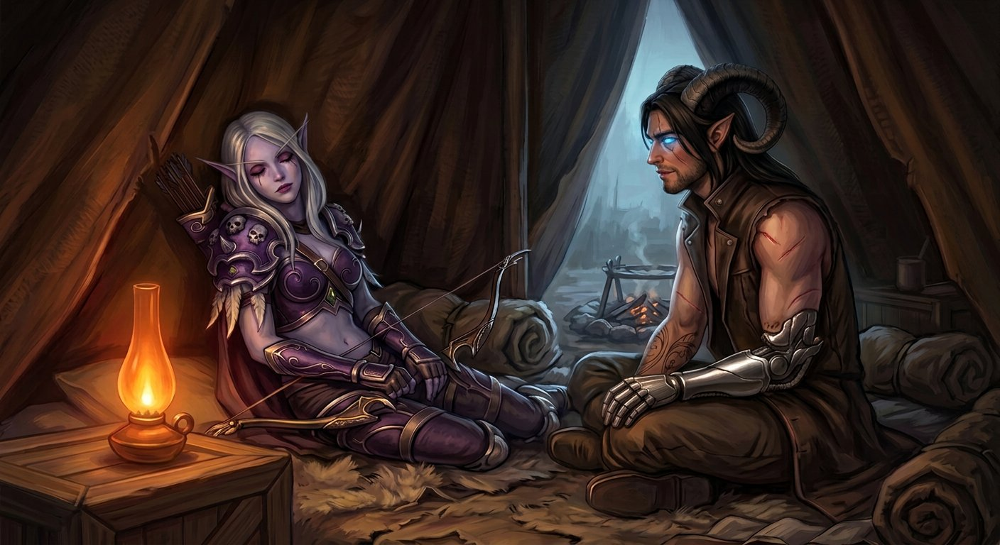

Capítulo Vinte e Quatro
O que se escolhe
Nathan acordou com luz.
Não a luz da Gorja — aquela cinza e uniforme que não vinha de lugar nenhum e ia para lugar nenhum e que existia desde o primeiro segundo em que ele tinha aberto os olhos naquele mundo. Era uma luz diferente. Mais quente. Mais próxima.
Levou dois segundos para entender de onde vinha.
A lamparina. A lamparina de óleo que Elyra tinha improvisado, aquela que dava uma luz baixa e alaranjada, estava acesa ao lado dele. E ao lado da lamparina, encostada na parede do abrigo com o arco no colo e os olhos fechados, estava Sylvanas.
Dormindo.
Nathan ficou imóvel.
Não de medo. Não de pânico. De uma coisa que ele não tinha nome pronto para descrever — algo entre reverência e espanto, como quem encontra uma coisa preciosa num lugar onde não deveria existir nada precioso, e não quer se mexer para não quebrar.
Ela dormia do jeito que fazia tudo: com controle. Mesmo dormindo, a postura era reta, as mãos no arco, o queixo minimamente levantado. O capuz tinha caído para trás — devia ter caído durante a noite, porque Sylvanas nunca deixava o capuz cair — e o cabelo prateado estava solto sobre os ombros, e o rosto dela estava relaxado de um jeito que Nathan nunca tinha visto em dois anos e meio de convivência.
Relaxado. A palavra não cabia. Sylvanas não relaxava. Sylvanas calculava, media, analisava, vigiava — mas não relaxava. E ali estava, relaxada, com a boca entreaberta e as mãos frouxas no arco e uma mecha de cabelo prateado caída sobre a bochecha cinza.
Nathan não se mexeu.
Ficou olhando. Com aquela atenção cuidadosa que ele dedicava às coisas que importavam — do mesmo jeito que tinha olhado para a primeira prótese quando finalmente funcionou, do mesmo jeito que tinha olhado para o teto do segundo abrigo na primeira noite em que dormiu sem sonhar com o mundo antigo.
Ela tinha ficado. Tinha prometido — "Dorme" — e tinha ficado.

✦
Fora do abrigo, a Gorja seguia igual. O zumbido baixo. O cinza uniforme. A luz que não era de sol. Varokh estava na entrada, sentado com o machado no colo, e Nathan percebeu pela posição dos ombros dele que tinha passado a noite inteira ali.
Elyra estava do outro lado do abrigo, enrolada num cobertor, e Nathan ouviu o som inconfundível de alguém que estava acordado mas fingindo que não estava — a respiração controlada demais, o corpo imóvel demais, a tensão no maxilar que só quem tinha passado muito tempo observando Elyra sabia identificar.
— Eu sei que você está acordada — sussurrou.
Elyra abriu um olho. Depois o outro. Depois se sentou, devagar, com o cuidado de quem não quer fazer barulho.
— Como você está? — perguntou, num sussurro.
Nathan pensou na resposta. Pensou de verdade, não na resposta automática que ele teria dado seis meses antes — "bem", "normal", "tudo certo". Pensou no que era verdade.
— Inteiro — disse.
Elyra inclinou a cabeça.
— Inteiro como?
— Inteiro de um jeito que eu não estava ontem. — Ele olhou para a mão de metal. Os dedos estavam quietos. Sem brilho. Sem tremor. — A prótese está quieta. O peito está quieto. E eu me lembro de tudo.
— Tudo o quê?
— Tudo o que eu vi. O corredor. A mesa. O molde. — Ele parou. — Os olhos azuis.
Elyra não disse nada por um tempo. Depois olhou para Sylvanas — dormindo, encostada na parede — e depois para Nathan, e tinha uma expressão no rosto dela que ele raramente via: seriedade sem comentário, atenção sem análise.
— Ela não saiu daqui — disse Elyra. — A noite inteira. Varokh fez vigia lá fora e eu fiz vigia aqui dentro, e ela não saiu do seu lado nem uma vez.
— Eu sei.
— Você sabe porque acordou e ela estava aqui.
— Eu sei porque eu senti. — Nathan olhou para as próprias mãos. — Quando o pânico veio, ontem, a primeira coisa que eu procurei foi a voz dela. E quando a voz não funcionou, a segunda coisa que eu procurei foi o toque. E ela sabia. Ela sabia antes de mim.
Elyra ficou quieta.
— Isso é — disse, devagar — a coisa mais bonita que alguém já disse na Gorja. E olha que a Gorja tem Varokh, que uma vez disse que eu era "toleravelmente insuportável", e isso já tinha sido o ápice emocional do lugar.
Nathan riu. Baixo, para não acordar Sylvanas. E a risada saiu inteira, sem peso, do jeito que as risadas saem quando o peito está quieto.
✦
Sylvanas acordou vinte minutos depois.
Não acordou do jeito normal — com os olhos abrindo de uma vez, alertas, prontos. Acordou devagar, como quem volta de um lugar muito fundo e precisa lembrar onde está, e quando os olhos abriram, a primeira coisa que encontraram foi Nathan, sentado a meio metro, olhando para ela.
Por um segundo — um segundo inteiro — o rosto dela não tinha máscara. Não tinha cálculo, não tinha controle, não tinha nada além da expressão crua de alguém que acabou de acordar e ainda não decidiu quem vai ser naquele dia.
Depois o segundo passou. A máscara voltou. O queixo subiu um milímetro.
— Você está me olhando — disse.
— Estou.
— Por quê?
— Porque o seu capuz caiu. E o seu cabelo está na sua cara. E eu queria ver quanto tempo levava para você perceber.
Sylvanas levou a mão ao cabelo. Afastou a mecha. Olhou para ele com aquela expressão de quem está medindo a distância entre irritação e divertimento e chegando à conclusão de que a distância é exatamente zero.
— Você está bem — disse. Não era pergunta.
— Estou. — Ele parou. — Obrigado.
Sylvanas não respondeu. Não precisava. O "obrigado" não era só pelo beijo — era pela noite inteira, pela mão no ombro, pelas palavras que não funcionaram e pela coisa que funcionou quando as palavras falharam, e pelos trezentos e sessenta e um dias antes disso, e pelos dois anos e meio antes disso, e por cada segundo em que ela tinha escolhido ficar a três metros até decidir que três metros não era mais suficiente.
Ela sabia disso. Ele sabia que ela sabia. E nenhum dos dois precisou dizer mais nada.
✦
O grupo se reuniu em volta do fogo.
Varokh acendeu. Elyra preparou café — ou o que passava por café na Gorja, uma infusão amarga que ela tinha aprendido a fazer com raízes de alguma coisa que crescia nas paredes e que Varokh descrevia como "tolerável em situações de desespero". Nathan aceitou um copo com as duas mãos — a de pele e a de metal — e sentiu o calor subir pelos dedos e chegar no peito e se espalhar.
Quatro pessoas. Uma fogueira. Um abrigo de couro. E uma porta selada a dois quilômetros de distância.
— Três decisões — disse Sylvanas, sem preâmbulo. Ela estava de pé, arco na mão, como sempre. Mas o capuz estava caído — não tinha puxado de volta — e Nathan notou que ninguém comentou, porque ninguém ia comentar. — Ficamos ou vamos. Abrimos ou não. E se abrirmos, Nathan volta ou fica.
Varokh apoiou o machado contra o joelho.
— A primeira é fácil — disse. — A gente fica. Se a gente for, a Gorja move a porta, e a gente nunca mais acha. E se a gente nunca mais achar, a gente nunca vai saber o que tem lá dentro, e o que tem lá dentro vai continuar esperando, e o Nathan vai continuar sonhando com corredor e mesa e molde até não conseguir mais dormir.
Elyra assentiu.
— E eu não vou dormir direito sabendo que existe uma porta com o nome dele atrás — disse. — Eu não funciono assim. Eu preciso saber. Eu sou insuportável quando não sei.
— Você é insuportável quando sabe — disse Varokh.
— Sim, mas quando não sei é pior.
Sylvanas olhou para Nathan.
— A segunda decisão é sua — disse.
Nathan respirou fundo. O ar entrou inteiro. O peito abriu.
— A gente abre — disse.
Silêncio.
— Mas não hoje. — Ele olhou para cada um deles. — Eu preciso entender o que tem dentro de mim antes de abrir aquela porta. Eu preciso saber o que é meu e o que é dele. Eu preciso saber se quando eu abrir, eu vou estar abrindo como Nathan — o Nathan que senta de frente para a porta e faz piada ruim e tem uma tatuagem no braço e passou dois anos e meio aprendendo a distância exata entre ele e a pessoa mais importante da vida dele — ou se eu vou estar abrindo como o que o Colecionador fabricou.
Varokh descruzou os braços.
— E como você faz isso?
— Eu durmo de novo — disse Nathan. — Se aquilo é memória, tem mais. E eu preciso ver tudo antes de decidir o que fazer com o que sobrar.
— E se o molde falar de novo? — perguntou Elyra. — Se ele estender a mão de novo? Se ele disser "finalmente" de novo?
Nathan olhou para a mão de metal. Abriu os dedos. Fechou. Os movimentos eram precisos, naturais — do jeito que tinham sido desde o primeiro dia. E agora ele sabia que "natural" não significava o que ele achava que significava. Mas significava outra coisa. Significava que alguém — ele mesmo, ou o que ele era antes — tinha feito aqueles movimentos centenas de vezes. Tinha construído. Tinha consertado. Tinha criado.
— Aí eu digo não — disse.
— Como você sabe que vai conseguir?
— Não sei. — Ele olhou para Elyra. — Mas ontem, quando eu acordei, quando o pânico veio, quando o corpo inteiro estava gritando para eu fugir — eu não fugi. Eu fiquei. Eu procurei a voz dela. Eu procurei o toque dela. E eu fiquei. Isso me diz alguma coisa.
— O que te diz?
— Me diz que o que o Colecionador colocou dentro de mim não é mais forte do que o que eu construí aqui. — Ele olhou para os três. — Ele me deu ferramentas. Me deu conhecimento. Me deu um molde. Mas não me deu vocês. Vocês eu encontrei sozinho. E isso tem mais peso.
Varokh olhou para Elyra. Elyra olhou para Varokh. E os dois fizeram aquele exchange silencioso que faziam desde o primeiro dia — meio segundo de olhos que dizia mais do que qualquer conversa.
— Então a gente se prepara — disse Varokh.
— Como? — perguntou Nathan.
— Do jeito que a gente sempre se preparou. — Varokh apontou para o machado. — Armas. Planos. Contingências. Se a porta abrir e alguma coisa sair, a gente segura. Se a porta abrir e nada sair, a gente entra com cuidado. E se a porta abrir e o Nathan começar a brilhar violeta de novo... — Ele olhou para Sylvanas. — A gente tem alguém que sabe trazer ele de volta.
Sylvanas não respondeu. Não precisava.
✦
A terceira decisão ficou para depois.
Ninguém falou sobre isso explicitamente — ninguém precisou. A terceira decisão — se Nathan volta ou fica — não era uma decisão que se tomava em volta de um fogo com café de raiz. Era uma decisão que se tomava na porta. Com a porta aberta. Com o molde do outro lado. Com tudo visível e concreto e impossível de ignorar.
E até lá, Nathan ainda era Nathan. Ainda estava ali. Ainda tinha a mão de metal e o sobretudo sem mangas e os chifres e as asas que nunca ficavam paradas e a tatuagem no braço direito e os olhos azuis que tinham sido castanhos um dia, antes da fenda, antes do ano sozinho, antes de tudo mudar — e que agora brilhavam do mesmo azul do molde, mas olhavam diferente, porque olhos são cor e são direção, e os dele sempre olhavam para ela.
Porque o molde tinha os mesmos olhos azuis. Mas o molde não tinha ficado trezentos e sessenta e um dias sendo procurado. O molde não tinha aprendido a distância exata entre si e a pessoa mais importante da sua vida. O molde não tinha tatuagem, nem chifres, nem asas, nem uma mão de metal construída peça por peça com teimosia e tentativa.
E essa era a diferença que importava.
✦
Naquela tarde, os quatro começaram a se preparar.
Varokh afiou o machado — não porque precisasse, mas porque afiar o machado era o que Varokh fazia quando estava se preparando para alguma coisa, e Nathan tinha aprendido a ler aquilo como quem lê um livro aberto. Elyra fez facas. Seis facas novas, de tamanhos diferentes, e reclamou de todas, e guardou todas, e Nathan sabia que ela reclamava porque era o jeito dela de dizer que estava com medo sem dizer que estava com medo.
Sylvanas conferiu as flechas. Contou três vezes. Conferiu a corda do arco. Conferiu o mapa — aquele mapa que eles tinham riscado e refeito tantas vezes que a rocha estava lisa nos cantos de tanto manuseio. E Nathan ficou do lado dela, perto o bastante para ver o que ela fazia, longe o bastante para não atrapalhar — a distância que ele tinha aprendido a manter em dois anos e meio, e que agora podia encurtar quando quisesse, mas que mantinha porque respeitava.
E à noite, antes de dormir, ele procurou a mão dela.
Não foi grande. Não foi cinematográfico. Foi a mão de metal encontrando a mão fria no escuro, e os dedos se encaixando, e ficarem assim por um tempo, sem dizer nada, enquanto o fogo baixava e a Gorja zumbia e o mundo inteiro esperava.
— Amanhã — disse Nathan.
— Amanhã — disse Sylvanas.
E Nathan dormiu. Sem sonhar. Sem corredor. Sem molde. Sem olhos azuis.
Só escuro. Só silêncio. Só o calor de uma mão fria na dele.
E isso, ele pensou no último instante antes de apagar, era suficiente.